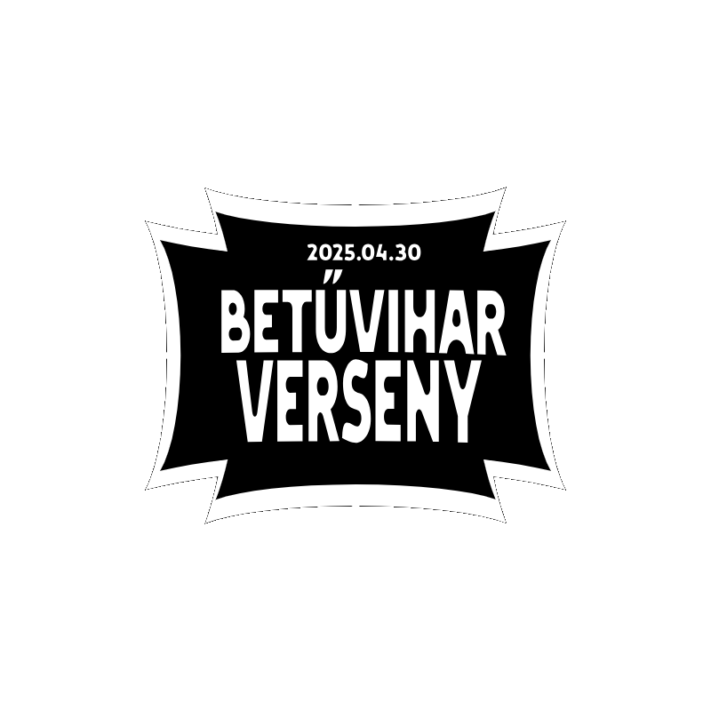

Betűvihar Mobilos Gyorsgépíró Bajnokság
Betűvihar Mobilos Gyorsgépíró Bajnokság a Bethlenben!
Ide is ellátogatott a híres Betűvihar Bajnokság. A diákoknak lehetőségük nyílik megmutatni, ki milyen gyorsan tud írni mobiltelefonján.
A versenyre bárki jelentkezhet, aki az iskolán belül dolgozik vagy tanul. A verseny közvetítve lesz a Twitchen.
A nyeremények a 3 leggyorsabb gépelő között lesznek kiosztva. Az első helyezett 150.000 Ft-ot nyer és továbbjuthat az országos bajnokságra.
A második helyezett egy ingyenes 200%-os 5-öst kap az általa választott tantárgyból, vagy dolgozóknak egy extra fizetett szabadság jár.
A harmadik helyezett pedig egy szabadnapot nyer az iskolából.
Az eseményre **2025.04.15-ig lehet jelentkezni**, a verseny pedig **2025.04.30-án, 15:00-kor** kerül megrendezésre tanítási idő után.
A verseny helyszíne a tornaterem lesz.
Verseny szabályai:
- ❌ Nem hozhatsz be ételt! (Vizet minden versenyzőnek biztosítunk.)
- 📱 A telefonodnak teljesen fel kell lennie töltve a verseny idejére.
- 🔤 Csak mobiltelefonnal lehet indulni.
- 📏 A versenyzőknek egy asztalnál kell ülniük, de a gépelési mód szabadon választható.
A verseny napján rövidített órák lesznek.
A versenyzőknek **1 percük lesz** egy adott szöveget legépelni. Aki a legtöbb karaktert írja le pontosan egy perc alatt, az nyer!
Írta: Szecskó Ádám
Kiadó: Bethlen suli újság